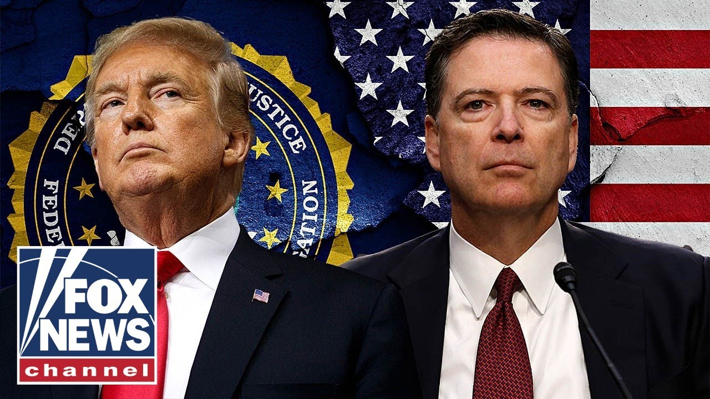

【科米在“许多坏事”上留下指纹，专家警告】
Summary: Former FBI Director James Comey faces scrutiny after a deleted social media post raised concerns with Secret Service officials, as the numbers 86 and 47 in the post were interpreted as threatening signals.
摘要： 前联邦调查局局长詹姆斯·科米因一条已删除的社交媒体帖子面临审查，该帖子中的数字86和47被解读为威胁信号，引发特勤局官员担忧。

⏱️ Estimated Reading Time: 6 min
Former FBI Director James Comey in some hot water meeting face-to-face with Secret Service officials last evening thanks to his now deleted social media post that read quote cool shell formation on the beach that spells out 8647 raising red flags to officials as it should as the number 86 is a common call sign used for murder or to get rid of someone while the number 47 of course is seen as signifying Trump.
前联邦调查局局长詹姆斯·科米昨晚与特勤局官员面对面会面时陷入麻烦，原因是他现已删除的社交媒体帖子中写道“海滩上酷炫的贝壳排列拼出8647”，这理所当然地引起了官员们的警觉，因为数字86通常被用作谋杀或除掉某人的代号，而数字47则被视为象征特朗普。
Congressman Rick Crawford serves as chairman of the House Intelligence Committee and he joins us now.
众议员里克·克劳福德担任众议院情报委员会主席，他现在加入了我们。
So, Mr. Chairman, are you buying James Comey's claim that he just had no idea what this meant?
那么，主席先生，您相信詹姆斯·科米声称自己完全不知道这意味着什么的说法吗？
He just thought it was a neat picture and he was going to put it on his on his web page.
他只是觉得这是一张很酷的照片，打算把它放到他的网页上。
Not at all.
完全不信。
No, that's ridiculous.
不，这太荒谬了。
And and he shouldn't be selling it.
而且他也不应该这样辩解。
It's it's insane that somebody that was in the position that he was in, FBI director, whatever his his political leanings are now, he was an FBI director and you think the American people are going to buy that you just happened on this random shell formation and have no idea what that might mean?
这简直疯了，一个曾经担任联邦调查局局长的人，无论他现在政治倾向如何，他曾经是联邦调查局局长，你认为美国人民会相信你只是偶然发现了这个随机的贝壳排列，完全不知道它可能意味着什么？
Give me a break.
别开玩笑了。
This guy is like, you know, an eighth grader in the back of the classroom with a behavioral problem jumping up and down, waving his hand saying, "Hey, don't forget about me. I'm still here."
这家伙就像教室里后排一个有行为问题的八年级学生，上蹿下跳，挥舞着手说：“嘿，别忘了我，我还在这儿呢。”
It's just ridiculous.
这太可笑了。
Is it that or is he signaling something?
他是这样，还是在传递某种信号？
I mean, listen, first of all, we have a cabinet member um who had his own father assassinated, his uncle assassinated.
我是说，听着，首先，我们有一位内阁成员的父亲和叔叔被暗杀。
We have a sitting president who's had two attempts on his life by Democrats.
我们有一位现任总统曾两次遭到民主党人的暗杀企图。
By the way, um I'm not buying all this um you know, stuff that it's some foreign country.
顺便说一句，我不相信所有这些关于某个外国国家的说法。
Those were Democrats.
那些是民主党人。
Comey, a Democrat, somebody who has actively tried to take down the president with with the fake Russia collusion case.
科米，一个民主党人，一个曾积极试图用虚假的俄罗斯勾结案推翻总统的人。
What are going to be the consequences for this?
这会带来什么后果？
Because something has to happen.
因为必须采取行动。
Sure.
当然。
So, the first thing we know is that obviously there was a referral made to the Secret Service.
所以，我们首先知道的是，显然已经向特勤局提交了报告。
That's appropriate anytime there's a threat against the president and they're taking the appropriate action.
任何时候对总统构成威胁时这样做都是合适的，他们正在采取适当的行动。
Keep in mind that that the Secret Service comes under the jurisdiction of DHS, which is Secretary Nomes Lane, but there may also be criminal proceedings under um FBI director and Pam Bondi.
请记住，特勤局隶属于国土安全部的管辖范围，部长是诺姆斯·莱恩，但也可能由联邦调查局局长和帕姆·邦迪提起刑事诉讼。
So this is there needs to be a you know a whole of federal law enforcement approach to this.
所以这需要联邦执法部门采取全面行动。
Um so we're we're seeing that already underway.
嗯，我们已经看到行动开始了。
The other issue is as you mentioned you know some of the some of the history of of Comey Russia Gate was one of those but think back to 2017 uh in June of that of that year when um there was an assassination attempt against Steve Scaliz and many others on a baseball field.
另一个问题是你提到的科米在俄罗斯门事件中的一些历史，但回想一下2017年6月，当时史蒂夫·斯卡利斯和其他许多人在棒球场上遭到暗杀企图。
Yeah.
是的。
Of Republicans.
共和党人。
We just after 8 years we just got that report from the FBI that investigation and he was a part of that even though it was the Comey culture.
就在8年后，我们刚刚从联邦调查局拿到了那份调查报告，他也是其中的一部分，尽管那是科米的文化。
It was McCabe that engaged in the cover up primarily but he was responsible for you know establishing that culture.
主要是麦凯布参与了掩盖，但他负责建立了那种文化。
Um, and so Comey has his fingerprints on an awful lot of bad things.
嗯，所以科米在许多坏事上都留下了指纹。
And and and keep in mind that what prompted this shooter in the case of of the 2017 shooting at the at the Republican baseball practice was political rhetoric.
而且请记住，2017年共和党棒球训练枪击案中，促使这名枪手行动的是政治言论。
It was this inciting um to violence that he had been listening to Bernie Sanders.
正是这种煽动暴力的言论，他一直在听伯尼·桑德斯的讲话。
And so a guy like Comey when you've already seen two atte assassination attempts against President Trump and he comes out and and then and you know this innocuous oh look what I just happened on here on the beach on my morning stroll on the beach.
所以像科米这样的人，当你已经看到两次针对特朗普总统的暗杀企图后，他站出来说，哦，看我在海滩晨